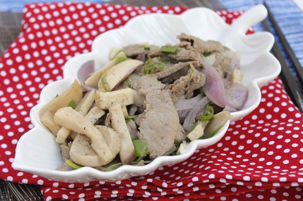

Nguyên liệu:
- 3 chân nấm đùi gà hay nấm rơm tùy theo sở thích của bạn
- 300g thịt bò thái lát
- Nửa củ hành tây màu tím
- Muối, hạt nêm, dầu hào, hành lá, dầu mè, nước mắm và tỏi
Cách làm:
Bước 1:
- Nấm đùi gà rửa sạch với nước muối pha loãng, cắt bỏ chân nấm, rửa lại cho thật sạch
- Thái nấm thành từng lát vừa ăn
Bước 2:
- Thịt bò rửa sạch, thái lát mỏng, cho vào bát thịt bò nửa thìa nhỏ muối, một ít hạt tiêu, một ít dầu hào, trộn đều ướp khoảng 30 phút.
- Hành tây bóc bỏ vỏ khô bên ngoài, rửa sạch, bổ múi cau. Hành lá rửa sạch, thái nhỏ.
Bước 3:
- Đun nóng dầu ăn, phi tỏi thơm, cho thịt bò vào xào chín lửa lớn, thịt bò chín tái thì đổ ra đĩa để riêng.
Bước 4:
- Dùng lại nồi nhỏ đó cho nấm vào xào chín, rưới một ít nước mắm vào nồi nấm, xào khoảng 5 phút thì cho tiếp hành tây vào xào cùng, xào đến khi hành chín, nêm gia vị lại vừa ăn.
Bước 5:
- Cho thịt bò vào xào cùng, thêm một ít dầu mè vào đảo cùng, nêm nếm lại tùy theo khẩu vị của bạn,
Bước 6:
- Tắt bếp, thêm hành lá đã thái nhỏ vào. Múc ra đĩa dùng làm món xào ăn với cơm.